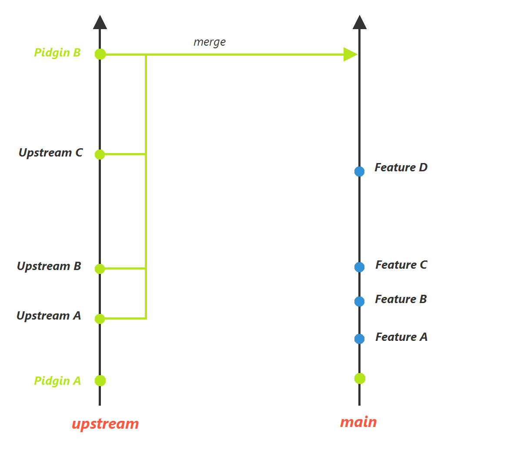
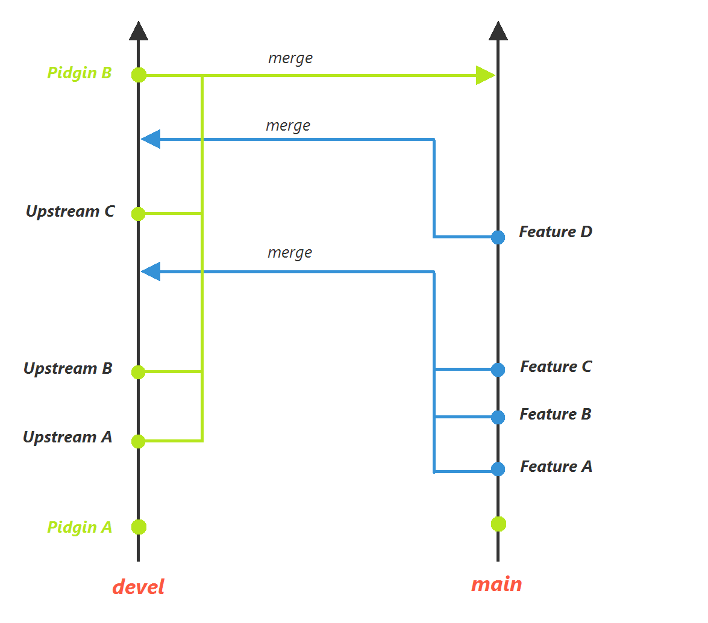

These are the workflows worked out for Pidgin Windev. At the time of this writing the former was being used. The latter can be used in case development snapshots become supported.
Upstream receives updates required for next version of Pidgin. Whenever a change matches a released Pidgin version the upstream branch gets merged with main, where features are developed and where Pidgin Windev releases come from.
Similar to the above except that features are "forwardported" from the main branch to devel. This allows using the latest features with the latest upstream changes, as long as Pidgin Windev is able to work with development snapshots in between Pidgin releases. The features are "forwardported" because that is easier than backporting with cherry picking.
